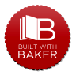

Замість корисної інфи.
Альманах української літератури "Колесо" ознайомить вас, любі читачі, із творчістю українських письменників і поетів минулого століття, як відомих так і майже забутих. У кожному випуску на вас чекатимуть вірші і оповідання, поеми і повісті... Сумні і веселі, серйозні і жартівливі - всі вони так чи інакше змальовують життя українського народу тих часів.
Література - це чи не єдиний засіб побачити минуле очами його сучасників, зрозуміти людей, їх потреби і мрії, їх почуття і сподівання, їх нужденність. І, можливо, відчути якийсь зв'язок між собою і тими людьми, що жили століття тому, які так само, як і ваші сучасники, дорослішали - але залишались мрійниками, зраджували собі - але продовжували когось кохати, від'їзжали у далекі краї - але залишались вірними своїй Батьківщині, своєму народу, які завжди прагнули бути вільними і незалежними...
...Колесо часу обертається і просуває нас вперед у часовому вимирі. Альманах української літератури "Колесо", як машина часу, допоможе вам повернутись у минуле. Для розваги чи на користь, сподіваємось, що час, проведений разом з альманахом "Колесо", принесе вам задоволення.
